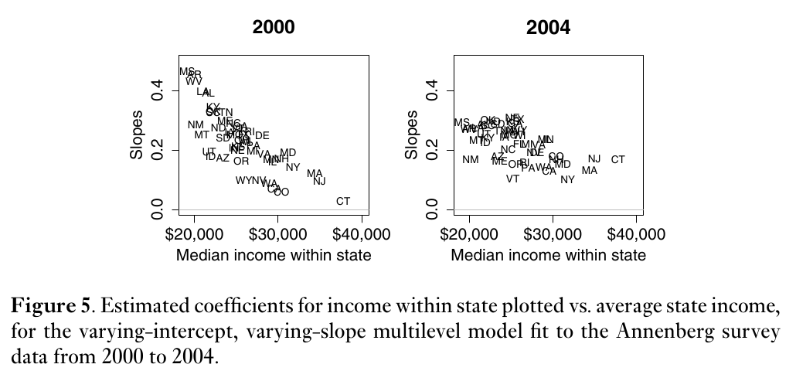
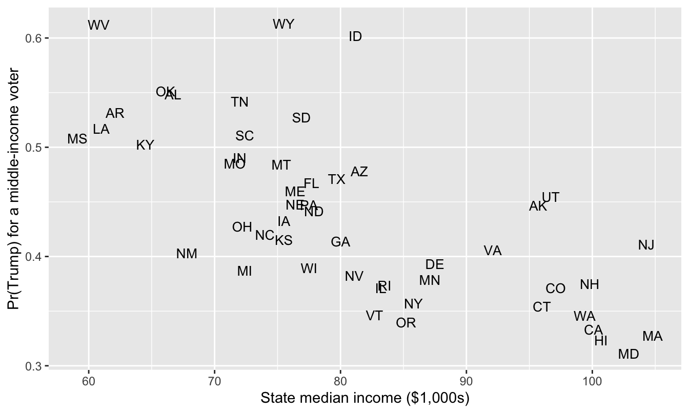
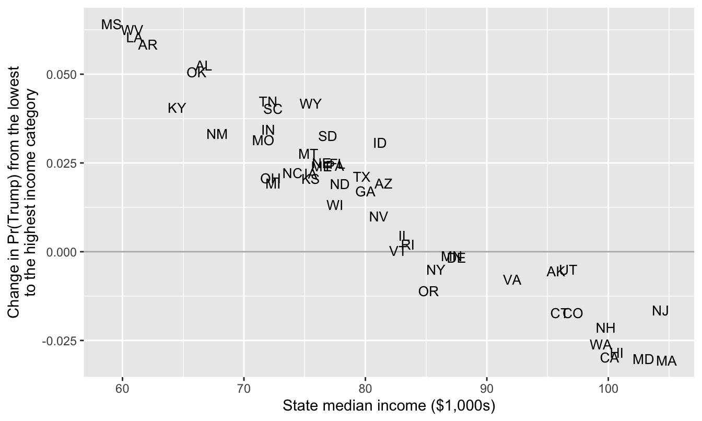
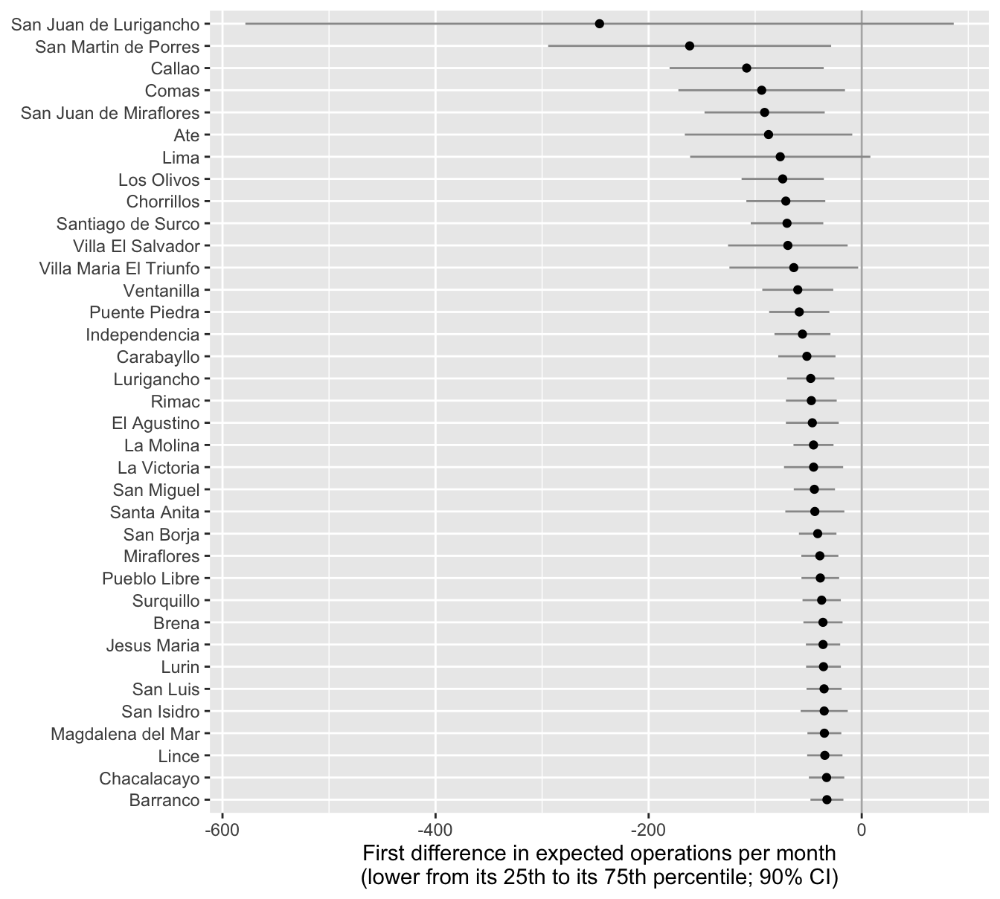

Instructor and TA copy: complete solutions, always open
Complete solutions are available. Work each exercise before you open one.
Exercise 1 Simulate and Recover; Negative Binomial
One important way to test and develop your understanding of statistical models and quantities of interest is to simulate a fake data set with known true quantity of interest (e.g., coefficients or first difference) and then recover that quantity of interest through your estimation procedure.
We did this for logit in Week 9 and for ordered logit in Week 10. Do this for a negative binomial regression.
Quantities of Interest
As your quantity of interest, use the percent increase in the expected count as the focal variable moves from a low value to a high value. That’s \(\frac{E(y \mid x_{hi})}{E(y \mid x_{lo})} - 1\).
Compute this percent increase setting the non-focal variables at their means (or modes, if qualitative).
Compute the “average percent increase” setting the non-focal variables at all observed values and then averaging the estimates.
Simulate
Simulate a fake data set with a known quantity of interest.
Choose a number of observations.
Create several predictors. (Don’t include an interaction.)
Choose values for all the parameters (each \(\beta\) and the single \(\theta\)).
Simulate an outcome variable.
The notes write the negative binomial as \(y_i \sim \text{NegBin}(\mu_i, \theta)\), where \(\log \mu_i = X_i\beta\) and \(\operatorname{Var}(y_i) = \mu_i + \mu_i^2/\theta\). To simulate from this distribution, compute the linear predictor eta from the predictors and the \(\beta\)s, then compute mu <- exp(eta), then draw y <- rnbinom(n, mu = mu, size = theta). R calls \(\theta\)size. Notice that mu is a vector (i.e., each observation has its own \(\mu_i\)) and size is a single number (i.e., every observation shares one \(\theta\)). (rnbinom() also has a prob argument, for a different parameterization. Use mu, not prob.) MASS::glm.nb() estimates \(\theta\) and reports it as Theta.
Recover
Fit the negative binomial model with MASS::glm.nb() and check that you have recovered the model parameters (each \(\beta\) and the single \(\theta\)). Are the true values inside their 90% confidence intervals?
Use {marginaleffects} to recover the two quantities of interest described above.
The percent increase for a typical case.
The average percent increase across the observed values.
The two estimates are the same. In Week 9, the two first differences for logit were different. Why are they the same here?
Hint
comparisons() has a comparison argument. comparison = function(hi, lo) hi/lo - 1 returns the percent increase (with its CI) in place of the difference hi - lo. This is mathematically equivalent to (hi - lo)/lo.
Complete solution
Simulate
Your code will differ. Here is one version.
# --- simulate a fake data set ---# set seed for reproducibilityset.seed(1234)# set sample sizen <-10000# needs to be large enough so that CI isn't super wide# create explanatory variables## numeric variablex1 <-rnorm(n, mean =0, sd =0.5)## qualitative variablex2 <-sample(c("Label 1", "Label 2"),size = n,replace =TRUE,prob =c(0.75, 0.25)) # about 75% will be "Label 1"# choose the parameters: three coefficients and one thetab0 <-1b1 <-0.5b2 <--0.7theta <-2# linear predictor and expected count; one mu per observationeta <- b0 + b1*x1 + b2*(x2 =="Label 2")mu <-exp(eta)# simulate the outcome; every observation shares one theta (called size)y <-rnbinom(n, mu = mu, size = theta)# combine into data framedata <-data.frame(y, x1, x2)# truth: percent increase in E(y) as x1 moves from -0.5 to 0.5 (one sd below# the mean to one sd above), with x2 = "Label 1"mu_lo <-exp(b0 + b1*(-0.5)) # x2 = "Label 1", so the b2 term is zeromu_hi <-exp(b0 + b1*0.5)mu_hi/mu_lo -1
[1] 0.6487213
# truth: average percent increase across the observed values of x2mu_lo_all <-exp(b0 + b1*(-0.5) + b2*(x2 =="Label 2"))mu_hi_all <-exp(b0 + b1*0.5+ b2*(x2 =="Label 2"))mean(mu_hi_all/mu_lo_all -1)
[1] 0.6487213
The true percent increase is \(e^{0.5} - 1 \approx 0.649\). The expected count is about 65% higher when x1 = 0.5 than when x1 = −0.5. Notice that the average percent increase is exactly the same number. (Part 3 below explains why.)
Recover: Part 1
# fit negative binomial modelfit <- MASS::glm.nb(y ~ x1 + x2, data = data)# estimates and 90% cis for the coefficientsest <-coef(fit)se <-sqrt(diag(vcov(fit)))cbind(truth =c(b0, b1, b2),estimate = est,lower = est -1.645*se,upper = est +1.645*se) |>round(3)
# (b) average percent increase across the observed values of x2avg_comparisons(fit,variables =list(x1 =c(-0.5, 0.5)),comparison =function(hi, lo) hi/lo -1,conf_level =0.9)
Notice that the \(\beta_2 x_2\) terms cancel. So the percent increase is \(e^{\beta_1} - 1\) for every observation, and averaging across the observed values of x2 changes nothing. For logit, the first difference \(\operatorname{logit}^{-1}(\beta_0 + 0.5\beta_1 + \beta_2 x_2) - \operatorname{logit}^{-1}(\beta_0 - 0.5\beta_1 + \beta_2 x_2)\) does depend on \(x_2\), so the two quantities were different in Week 9. (The first difference in expected counts, \(E(y \mid x_{hi}) - E(y \mid x_{lo}) = \mu_{lo}(e^{\beta_1} - 1)\), depends on x2 through \(\mu_{lo}\). We’ll see this in Exercise 3.)
Exercise 2 Red State, Blue State: Part 8
In Part 6, each state had its own intercept, and we modeled the 50 intercepts as a function of state income. Now each state gets its own intercept and its own income slope, and we model both as a function of state income.
Here, \(s[i]\) is the state of voter \(i\) and \(z_s\) is rs_state_median_income. The state deviations \((\eta^{\alpha}_s, \eta^{\beta}_s)\) are bivariate normal with mean zero, SDs \(\sigma_{\alpha}\) and \(\sigma_{\beta}\), and correlation \(\rho\). In brm(), the formula is vote_rep ~ rs_state_median_income * income + (1 + income | state_name).
Since income = 0 is the middle category, \(\alpha_s\) is the log-odds of voting for Trump for a middle-income voter in state \(s\), and \(\beta_s\) is the change in the log-odds for a one-category increase in income.
This is a simpler version of Model 1 in Gelman et al. (2007, p. 355) [pdf] (the model behind their Figures 4 and 5). Their version also includes region indicators.
# load data; 50 statesces <-read_csv("https://pos5747.github.io/files/red-state-part4.csv")# make a state-level data setstates <- ces |>distinct(state_name, state_abbr, state_median_income) |>mutate(rs_state_median_income = arm::rescale(state_median_income)) |>glimpse()# add rescaled state income to the votersces <- ces |>left_join(select(states, state_name, rs_state_median_income), by ="state_name") |>glimpse()
Use {marginaleffects} to compute quantities of interest on the probability scale.
Fit the model with brm(). Use family = bernoulli, backend = "cmdstanr", chains = 4, cores = 4, iter = 6000, and warmup = 1000. (The fit takes about 15 minutes on a fast desktop.) Check R-hat and the ESS.
For a middle-income voter (income = 0) in each state, compute (a) the chance of voting for Trump with predictions() and (b) the change in that chance as income moves from its minimum to its maximum with comparisons(). Then make two plots, both with state_median_income on the x-axis and each state’s two-letter abbreviation as its point (geom_text()): one with the chance on the y-axis and one with the change on the y-axis.
Interpret the plots. Where are the rich states? Where are the poor states? How do differences across individual income levels change across rich and poor state?
Figure 5 of Gelman et al. (2007, p. 357), below, plots each state’s estimated income slope against state income for 2000 and 2004. They write: “Figure 5 shows the estimated slopes for all 50 states and reveals a clear pattern, with high coefficients — steep slopes — in poor states and low coefficients in rich states. Income matters more in red America than in blue America. Or, to put it another way, being in a red or blue state matters more for rich voters than for poor voters” (pp. 356–357). Compare your plot of the changes with their Figure 5. What’s the same? What’s different?

Figure 5 of Gelman et al. (2007, p. 357).
Hint
For newdata in part 2, use the state-level data set with income added: states |> mutate(income = 0). (Don’t use datagrid(state_name = unique). It would set rs_state_median_income to its mean in every state, and each state needs its own value.) For the change, use variables = list(income = "minmax").
Family: bernoulli
Links: mu = logit
Formula: vote_rep ~ rs_state_median_income * income + (1 + income | state_name)
Data: ces (Number of observations: 48582)
Draws: 4 chains, each with iter = 6000; warmup = 1000; thin = 1;
total post-warmup draws = 20000
Multilevel Hyperparameters:
~state_name (Number of levels: 50)
Estimate Est.Error l-90% CI u-90% CI Rhat Bulk_ESS
sd(Intercept) 0.26 0.03 0.21 0.32 1.00 3342
sd(income) 0.02 0.01 0.00 0.04 1.00 5634
cor(Intercept,income) 0.42 0.46 -0.53 0.96 1.00 13665
Tail_ESS
sd(Intercept) 7398
sd(income) 6286
cor(Intercept,income) 9981
Regression Coefficients:
Estimate Est.Error l-90% CI u-90% CI Rhat
Intercept -0.25 0.04 -0.32 -0.19 1.00
rs_state_median_income -0.45 0.08 -0.58 -0.32 1.00
income 0.02 0.01 -0.00 0.03 1.00
rs_state_median_income:income -0.05 0.02 -0.09 -0.02 1.00
Bulk_ESS Tail_ESS
Intercept 2450 4750
rs_state_median_income 3206 6269
income 18728 14254
rs_state_median_income:income 18966 15072
Draws were sampled using sample(hmc). For each parameter, Bulk_ESS
and Tail_ESS are effective sample size measures, and Rhat is the potential
scale reduction factor on split chains (at convergence, Rhat = 1).
R-hat is 1.00 for every parameter, and the smallest bulk ESS is about 2,450 (the intercept). No divergent transitions.
You may notice that rs_state_median_income:income (\(\delta_1\)) is negative with a 90% interval that excludes zero—this means that the slope for individual income is more positive in poorer states.
Part 2
# a middle-income voter in each state (each state keeps its own rs_state_median_income)typical <- states |>mutate(income =0)# the chance of voting for Trumppr <-predictions(fit_rs, newdata = typical, conf_level =0.9)# the change in the chance of voting for Trump as income moves from its minimum (-2) to its maximum (2)cmp <-comparisons(fit_rs, variables =list(income ="minmax"), newdata = typical, conf_level =0.9)# combine into one data frame, one row per stateqi <- typical |>mutate(pr_trump = pr$estimate,change = cmp$estimate,change_lo = cmp$conf.low,change_hi = cmp$conf.high)# the 5 largest and smallest changesqi |>select(state_abbr, state_median_income, pr_trump, change, change_lo, change_hi) |>arrange(desc(change)) |>slice(c(1:5, 46:50))
# A tibble: 10 × 6
state_abbr state_median_income pr_trump change change_lo change_hi
<chr> <dbl> <dbl> <dbl> <dbl> <dbl>
1 MS 59.1 0.508 0.0641 0.0226 0.116
2 WV 60.8 0.612 0.0626 0.0179 0.111
3 LA 61 0.517 0.0605 0.0226 0.107
4 AR 62.1 0.532 0.0584 0.0206 0.104
5 AL 66.7 0.549 0.0524 0.0170 0.0966
6 WA 99.4 0.346 -0.0261 -0.0608 0.00547
7 HI 101. 0.323 -0.0284 -0.0661 0.00660
8 CA 100. 0.333 -0.0297 -0.0602 -0.00248
9 MD 103. 0.311 -0.0301 -0.0641 0.00528
10 MA 105. 0.328 -0.0306 -0.0649 0.00806
# the chance of voting for Trump by state incomeggplot(qi, aes(x = state_median_income, y = pr_trump, label = state_abbr)) +geom_text(size =3.5) +labs(x ="State median income ($1,000s)",y ="Pr(Trump) for a middle-income voter")

# the change in the chance by state income; compare with Gelman et al.'s Figure 5ggplot(qi, aes(x = state_median_income, y = change, label = state_abbr)) +geom_hline(yintercept =0, color ="grey70") +geom_text(size =3.5) +labs(x ="State median income ($1,000s)",y ="Change in Pr(Trump) from the lowest\nto the highest income category")

Part 3
In the first plot, the chance of voting for Trump falls as state income rises.
The poor states are in the upper left. A middle-income voter in West Virginia or Wyoming has about a 61% chance of voting for Trump.
The rich states are in the lower right. A middle-income voter in Maryland, Hawaii, Massachusetts, or California has about a 32% chance of voting for Trump.
In the second plot, the change (in Pr(Trump) across income levels) also decreases as state income rises. Moving from the lowest (-2) to the highest (+2) income category raises the chance of voting for Trump by about 6 percentage points in Mississippi, West Virginia, Louisiana, and Arkansas, and lowers it by about 3 points in Massachusetts, Maryland, California, and Hawaii. So individual income matters more in poor states. But the changes are positive in poor states and negative in rich states.
In both plots, the points fall close to a line. This is partly the model. Each state has too little data to pin down its own intercept and slope, so the estimates are pulled toward \(\gamma_0 + \gamma_1 z_s\) and \(\delta_0 + \delta_1 z_s\). (The Gelman paper makes this point in footnote 11 on p. 357: shrinkage toward the fitted lines “does not mean that we are certain that all 50 states fall along these lines.”)
Part 4
Same: The slope is steepest in the poorest states and flattest in the richest. Mississippi, West Virginia, Arkansas, and Louisiana are at the top in 2000 and in 2024; Connecticut, Massachusetts, and New Jersey are at the bottom in both.
Different: In 2000 and 2004, the slope was positive in every state, from about 0 in Connecticut to about 0.4 in Mississippi. In 2024, the slopes are slightly negative in the rich states. Moving from the lowest to the highest income category raises Pr(Trump) from 0.48 to 0.54 in Mississippi and lowers it from 0.34 to 0.31 in Massachusetts.
Their second claim still holds. The gap between Mississippi and Massachusetts is 13 points among the poorest voters (0.48 vs. 0.34) and 23 points among the richest (0.54 vs. 0.31). Being in a red or blue state matters more for rich voters than for poor voters.
Exercise 3 Holland (2015): Four Quantities of Interest
In Weeks 4 and 5, we modeled Holland’s (2015) [pdf] enforcement operations in Santiago with a negative binomial regression. The key explanatory variable is lower, the percent of a district’s residents who are lower class. Holland expects enforcement to drop off as lower grows. Now use her data for Lima, where the pattern is much sharper.
# load data for lima; 36 districtslima <- crdata::holland2015 |>filter(city =="lima")# model 1 in holland (2015) table 2, for limanb_fit <- MASS::glm.nb(operations ~ lower + vendors + budget + population, data = lima)
Use {marginaleffects} to compute four quantities of interest as lower moves from its 25th percentile to its 75th percentile (variables = list(lower = "iqr")). Report each with a 90% CI.
The first difference in the expected number of operations for each district, holding the district’s other variables at their observed values. Plot the 36 estimates and their CIs, sorted.
The first difference for a typical district, with the other variables at their means (datagrid(grid_type = "mean_or_mode")).
The average first difference across the 36 districts (avg_comparisons()).
The percent change in the expected number of operations (comparison = function(hi, lo) hi/lo - 1, as in Exercise 1). It’s the same in every district. Why?
Which of the four do you prefer? Why?
Complete solution
Part 1
# first difference for each district as lower moves from its 25th to its 75th percentilefd_district <-comparisons(nb_fit,variables =list(lower ="iqr"),newdata = lima, # keeps the district namesconf_level =0.9) |>as_tibble() |>select(district, lower, vendors, population, operations, estimate, conf.low, conf.high) |>arrange(estimate)fd_district
# A tibble: 36 × 8
district lower vendors population operations estimate conf.low conf.high
<chr> <dbl> <dbl> <dbl> <dbl> <dbl> <dbl> <dbl>
1 San Juan de … 57.7 20 89.8 35 -246. -579. 86.3
2 San Martin d… 42.2 4 58.0 30 -161. -294. -28.7
3 Callao 37.6 0.900 41.6 40 -108. -180. -35.7
4 Comas 57.4 10.8 48.7 3 -93.9 -172. -15.7
5 San Juan de … 35.2 0.900 36.3 30 -91.1 -148. -34.7
6 Ate 59.9 12 47.8 7 -87.4 -166. -8.87
7 Lima 25.2 0.900 29.9 50 -76.5 -161. 8.12
8 Los Olivos 42.2 2.70 31.8 44 -74.2 -113. -35.6
9 Chorrillos 35.2 1.10 28.7 50 -71.2 -108. -34.2
10 Santiago de … 9 1.80 29.0 30 -70.1 -104. -36.1
# ℹ 26 more rows
ggplot(fd_district, aes(x = estimate, y =reorder(district, -estimate))) +geom_vline(xintercept =0, color ="grey70") +geom_linerange(aes(xmin = conf.low, xmax = conf.high), color ="grey60") +geom_point() +labs(x ="First difference in expected operations per month\n(lower from its 25th to its 75th percentile; 90% CI)",y =NULL)

Part 2
# a typical district: the other variables at their meanscomparisons(nb_fit,variables =list(lower ="iqr"),newdata =datagrid(grid_type ="mean_or_mode"),conf_level =0.9)
# the percent change; the same in every district, so averaging changes nothingavg_comparisons(nb_fit,variables =list(lower ="iqr"),comparison =function(hi, lo) hi/lo -1,conf_level =0.9)
Every first difference is negative (though only 34 of the 36 CIs exclude zero). The model has one coefficient for lower, but the link is a log, so the first difference is \(\mu_{Q1}(e^{\beta \Delta} - 1) \approx -0.9 \mu_{Q1}\). It’s about −33 operations per month in the least populous districts (Barranco, Chacalacayo, Magdalena del Mar, and Lince, with populations of 3.4 to 5.5 in the data’s units) and −246 in the most populous district (San Juan de Lurigancho, with a population of 89.8, about 16 times Barranco’s).
The typical district’s first difference is −54 (90% CI from −80 to −28). The average first difference is −62 (from −96 to −28). The average is larger because the big districts pull the average up. The percent change is −89% (from −96% to −82%). It’s the same in every district because \(e^{\beta \Delta} - 1\) doesn’t involve the other variables (see Exercise 1, part 3).
Whith a log link and no interactions, the percent change is a natural summary. It’s one number, it’s the same in every district, and it’s what the model estimates directly. The first differences are on the scale of the outcome variable (i.e., the count of operations), and its a very common summary to report, so readers might feel more comfortable with some first difference.
References
Holland, Alisha C. 2015. “The Distributive Politics of Enforcement.”American Journal of Political Science 59 (2): 357–71. https://doi.org/10.1111/ajps.12125.